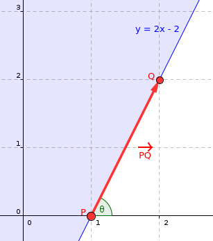
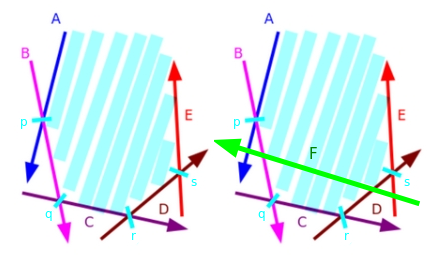
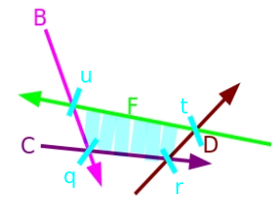

হাফ-প্লেন ইন্টারসেকশন¶
এই আর্টিকেলে আমরা হাফ-প্লেনগুলোর একটি সেটের ছেদ (intersection) নির্ণয়ের সমস্যা নিয়ে আলোচনা করব। এই ধরনের ছেদকে সুবিধাজনকভাবে একটি উত্তল (convex) অঞ্চল/পলিগন হিসেবে উপস্থাপন করা যায়, যেখানে এর ভেতরের প্রতিটি বিন্দু সব হাফ-প্লেনের ভেতরেও অবস্থান করে, এবং এই পলিগনটিই আমরা খুঁজে বের করতে বা নির্মাণ করতে চাই। আমরা সমস্যাটির কিছু প্রাথমিক ধারণা দেব, সর্ট-অ্যান্ড-ইনক্রিমেন্টাল অ্যালগরিদম নামে পরিচিত একটি $O(N \log N)$ পদ্ধতি বর্ণনা করব এবং এই টেকনিকের কিছু নমুনা প্রয়োগ দেখাব।
পাঠকের জন্য মৌলিক জ্যামিতিক আদিম (primitives) এবং অপারেশন (বিন্দু, ভেক্টর, সরলরেখার ছেদ) সম্পর্কে পরিচিত হওয়া দৃঢ়ভাবে সুপারিশ করা হচ্ছে। এছাড়াও, কনভেক্স হাল বা কনভেক্স হাল ট্রিক সম্পর্কে জ্ঞান থাকলে এই আর্টিকেলের ধারণাগুলো আরও ভালোভাবে বুঝতে সাহায্য করতে পারে, তবে এগুলো কোনোভাবেই পূর্বশর্ত নয়।
প্রাথমিক ব্যাখ্যা ও সংজ্ঞা¶
পুরো আর্টিকেল জুড়ে, আমরা কিছু অনুমান করব (অন্যথায় উল্লেখ না করা হলে):
- আমরা প্রদত্ত সেটে হাফ-প্লেনের সংখ্যাকে $N$ দ্বারা সংজ্ঞায়িত করব।
- আমরা সরলরেখা এবং হাফ-প্লেনকে একটি বিন্দু এবং একটি ভেক্টর দিয়ে উপস্থাপন করব (প্রদত্ত সরলরেখার উপর অবস্থিত যেকোনো বিন্দু, এবং সরলরেখার দিক ভেক্টর)। হাফ-প্লেনের ক্ষেত্রে, আমরা ধরে নিই যে প্রতিটি হাফ-প্লেন তার দিক ভেক্টরের বাম দিকের অঞ্চল অনুমোদন করে। এছাড়াও, আমরা একটি হাফ-প্লেনের কোণকে তার দিক ভেক্টরের পোলার কোণ হিসেবে সংজ্ঞায়িত করি। উদাহরণের জন্য নিচের ছবিটি দেখুন।
- আমরা ধরে নেব যে ফলস্বরূপ ছেদ সবসময় হয় সীমাবদ্ধ (bounded) অথবা শূন্য (empty)। যদি আমাদের অসীমাবদ্ধ ক্ষেত্র সামলাতে হয়, তাহলে আমরা সহজেই ৪টি হাফ-প্লেন যোগ করতে পারি যা একটি যথেষ্ট বড় বাউন্ডিং বক্স সংজ্ঞায়িত করে।
- সরলতার জন্য আমরা ধরে নেব যে প্রদত্ত সেটে কোনো সমান্তরাল হাফ-প্লেন নেই। আর্টিকেলের শেষের দিকে আমরা এই ধরনের ক্ষেত্র কীভাবে সামলাতে হয় তা আলোচনা করব।

হাফ-প্লেন $y \geq 2x - 2$ কে বিন্দু $P = (1, 0)$ এবং দিক ভেক্টর $PQ = Q - P = (1, 2)$ দিয়ে উপস্থাপন করা যায়
ব্রুট ফোর্স পদ্ধতি - $O(N^3)$¶
সবচেয়ে সরল এবং স্পষ্ট সমাধানগুলোর একটি হলো সব জোড়া হাফ-প্লেনের সরলরেখার ছেদবিন্দু গণনা করা এবং প্রতিটি বিন্দুর জন্য পরীক্ষা করা যে এটি অন্য সব হাফ-প্লেনের ভেতরে আছে কি না। যেহেতু $O(N^2)$টি ছেদবিন্দু আছে, এবং প্রতিটির জন্য আমাদের $O(N)$টি হাফ-প্লেন পরীক্ষা করতে হয়, মোট টাইম কমপ্লেক্সিটি হলো $O(N^3)$। ছেদের প্রকৃত অঞ্চলটি তখন পুনর্গঠন করা যায়, উদাহরণস্বরূপ, সব হাফ-প্লেনের মধ্যে অন্তর্ভুক্ত ছেদবিন্দুগুলোর সেটের উপর একটি কনভেক্স হাল অ্যালগরিদম ব্যবহার করে।
এটি কেন কাজ করে তা দেখা বেশ সহজ: ফলস্বরূপ উত্তল পলিগনের শীর্ষবিন্দুগুলো সব হাফ-প্লেন সরলরেখার ছেদবিন্দু, এবং সেই শীর্ষবিন্দুগুলোর প্রতিটি স্পষ্টতই সব হাফ-প্লেনের অংশ। এই পদ্ধতির প্রধান সুবিধা হলো এটি বোঝা, মনে রাখা এবং তাৎক্ষণিকভাবে কোড করা সহজ যদি আপনি শুধু ছেদ শূন্য কি না তা পরীক্ষা করতে চান। তবে, এটি ভয়ানক ধীর এবং বেশিরভাগ সমস্যার জন্য অনুপযুক্ত, তাই আমাদের আরও দ্রুত কিছু দরকার।
ইনক্রিমেন্টাল পদ্ধতি - $O(N^2)$¶
আরেকটি মোটামুটি সরল পদ্ধতি হলো হাফ-প্লেনগুলোর ছেদ একটি একটি করে ধাপে ধাপে নির্মাণ করা। এই পদ্ধতিটি মূলত একটি উত্তল পলিগনকে একটি সরলরেখা দিয়ে $N$ বার কাটা এবং প্রতিটি ধাপে অপ্রয়োজনীয় হাফ-প্লেনগুলো সরিয়ে ফেলার সমতুল্য। এটি করতে, আমরা উত্তল পলিগনটিকে রেখাংশের একটি তালিকা হিসেবে উপস্থাপন করতে পারি, এবং একটি হাফ-প্লেন দিয়ে কাটতে আমরা সহজেই রেখাংশগুলোর সাথে হাফ-প্লেন সরলরেখার ছেদবিন্দু খুঁজি (সরলরেখাটি যদি পলিগনটিকে সঠিকভাবে ছেদ করে তবে মাত্র দুটি ছেদবিন্দু থাকবে), এবং মাঝখানের সব রেখাংশকে হাফ-প্লেনের সাথে সম্পর্কিত নতুন রেখাংশ দিয়ে প্রতিস্থাপন করি। যেহেতু এই প্রক্রিয়াটি রৈখিক সময়ে ইমপ্লিমেন্ট করা যায়, আমরা সহজেই একটি বড় বাউন্ডিং বক্স দিয়ে শুরু করতে পারি এবং প্রতিটি হাফ-প্লেন দিয়ে কেটে নিতে পারি, ফলে মোট টাইম কমপ্লেক্সিটি হয় $O(N^2)$।
এই পদ্ধতিটি সঠিক দিকে একটি বড় পদক্ষেপ, কিন্তু প্রতিটি ধাপে $O(N)$ হাফ-প্লেনের উপর ইটারেট করা অপচয়মূলক মনে হয়। আমরা পরবর্তীতে দেখব যে, কিছু চতুর পর্যবেক্ষণ করে, এই ইনক্রিমেন্টাল পদ্ধতির পেছনের ধারণাগুলো পুনর্ব্যবহার করে একটি $O(N \log N)$ অ্যালগরিদম তৈরি করা যায়।
সর্ট-অ্যান্ড-ইনক্রিমেন্টাল অ্যালগরিদম - $O(N \log N)$¶
এই অ্যালগরিদমের প্রথম সঠিকভাবে নথিভুক্ত উৎস যা আমরা খুঁজে পেয়েছি তা হলো চাইনিজ টিম সিলেক্টিং কন্টেস্টের জন্য Zeyuan Zhu-র থিসিস New Algorithm for Half-plane Intersection and its Practical Value, যা ২০০৬ সালে প্রকাশিত। আমরা পরবর্তীতে যে পদ্ধতি বর্ণনা করব তা এই একই অ্যালগরিদমের উপর ভিত্তি করে, কিন্তু ছেদের নিম্ন ও উপরের অর্ধাংশের জন্য দুটি পৃথক ছেদ গণনা করার পরিবর্তে, আমরা একটি ডেক (ডাবল-এন্ডেড কিউ) দিয়ে একবারেই সব নির্মাণ করব।
অ্যালগরিদমটি নিজেই, নাম থেকে যেমন অনুমান করা যায়, এই সত্যের সুবিধা নেয় যে হাফ-প্লেনের ছেদ থেকে ফলস্বরূপ অঞ্চলটি উত্তল, এবং তাই এটি তাদের কোণ অনুসারে সর্ট করা ক্রমে হাফ-প্লেনের কিছু সেগমেন্ট নিয়ে গঠিত হবে। এটি একটি গুরুত্বপূর্ণ পর্যবেক্ষণের দিকে নিয়ে যায়: যদি আমরা হাফ-প্লেনগুলোকে তাদের কোণ অনুসারে সর্ট করা ক্রমে (যেভাবে তারা ছেদের চূড়ান্ত আকৃতিতে দেখা যাবে) ক্রমান্বয়ে ছেদ করি এবং একটি ডাবল-এন্ডেড কিউতে সংরক্ষণ করি, তাহলে আমাদের শুধুমাত্র ডেকের সামনে এবং পেছন থেকে হাফ-প্লেন সরাতে হবে।
এই সত্যটি আরও ভালোভাবে কল্পনা করতে, ধরুন আমরা পূর্বে বর্ণিত ইনক্রিমেন্টাল পদ্ধতিটি কোণ অনুসারে সর্ট করা হাফ-প্লেনের একটি সেটের উপর প্রয়োগ করছি (এই ক্ষেত্রে, আমরা ধরে নেব এগুলো $-\pi$ থেকে $\pi$ পর্যন্ত সর্ট করা), এবং ধরুন আমরা কোনো একটি $k$-তম ধাপ শুরু করতে যাচ্ছি। এর মানে আমরা ইতিমধ্যে প্রথম $k-1$ হাফ-প্লেনের ছেদ নির্মাণ করেছি। এখন, যেহেতু হাফ-প্লেনগুলো কোণ অনুসারে সর্ট করা, $k$-তম হাফ-প্লেন যাই হোক না কেন, আমরা নিশ্চিত হতে পারি যে এটি $(K-1)$-তম হাফ-প্লেনের সাথে একটি উত্তল বাঁক তৈরি করবে। এই কারণে, কয়েকটি জিনিস ঘটতে পারে:
- ছেদের পেছনের কিছু (সম্ভবত শূন্য) হাফ-প্লেন অপ্রয়োজনীয় হয়ে যেতে পারে। এই ক্ষেত্রে, আমাদের এই এখন-অকেজো হাফ-প্লেনগুলো ডেকের পেছন থেকে পপ করতে হবে।
- সামনের কিছু (সম্ভবত শূন্য) হাফ-প্লেন অপ্রয়োজনীয় হয়ে যেতে পারে। কেস ১-এর অনুরূপ, আমরা সেগুলো ডেকের সামনে থেকে পপ করি।
- ছেদ শূন্য হয়ে যেতে পারে (কেস ১ এবং/অথবা ২ সামলানোর পরে)। এই ক্ষেত্রে, আমরা শুধু রিপোর্ট করি যে ছেদ শূন্য এবং অ্যালগরিদম সমাপ্ত করি।
আমরা বলি একটি হাফ-প্লেন "অপ্রয়োজনীয়" যদি এটি ছেদে কিছুই অবদান না রাখে। এরকম একটি হাফ-প্লেন সরিয়ে ফেললেও ফলস্বরূপ ছেদ মোটেই পরিবর্তন হবে না।
এখানে একটি ছোট উদাহরণ সচিত্রে দেওয়া হলো:
ধরি $H = \{ A, B, C, D, E \}$ হলো বর্তমানে ছেদে উপস্থিত হাফ-প্লেনের সেট। এছাড়াও, ধরি $P = \{ p, q, r, s \}$ হলো H-তে পাশাপাশি হাফ-প্লেনগুলোর ছেদবিন্দুর সেট। এখন, ধরুন আমরা এটিকে হাফ-প্লেন $F$ দিয়ে ছেদ করতে চাই, যেমনটি নিচের চিত্রে দেখানো হয়েছে:

লক্ষ্য করুন হাফ-প্লেন $F$ ছেদে $A$ এবং $E$-কে অপ্রয়োজনীয় করে তোলে। তাই আমরা ছেদের সামনে এবং পেছন থেকে যথাক্রমে $A$ এবং $E$ সরিয়ে ফেলি, এবং শেষে $F$ যোগ করি। এবং আমরা অবশেষে নতুন ছেদ $H = \{ B, C, D, F\}$ পাই যেখানে $P = \{ q, r, t, u \}$।

এই সব মাথায় রেখে, অ্যালগরিদমটি আসলে ইমপ্লিমেন্ট করতে আমাদের প্রায় সবকিছুই আছে, কিন্তু আমাদের এখনও কিছু বিশেষ ক্ষেত্র নিয়ে কথা বলতে হবে। আর্টিকেলের শুরুতে আমরা বলেছিলাম যে ছেদ অসীমাবদ্ধ হতে পারে এমন ক্ষেত্রগুলো সামলাতে আমরা একটি বাউন্ডিং বক্স যোগ করব, তাই আমাদের আসলে একমাত্র কঠিন ক্ষেত্র হলো সমান্তরাল হাফ-প্লেন। আমাদের দুটি উপ-ক্ষেত্র থাকতে পারে: দুটি হাফ-প্লেন একই দিকে সমান্তরাল হতে পারে অথবা বিপরীত দিকে। এই ক্ষেত্রটি আলাদাভাবে সামলাতে হওয়ার কারণ হলো একটি হাফ-প্লেন অপ্রয়োজনীয় কি না তা পরীক্ষা করতে আমাদের হাফ-প্লেন সরলরেখার ছেদবিন্দু গণনা করতে হবে, এবং দুটি সমান্তরাল সরলরেখার কোনো ছেদবিন্দু নেই, তাই আমাদের এগুলো সামলানোর জন্য একটি বিশেষ উপায় দরকার।
বিপরীত দিকের সমান্তরাল হাফ-প্লেনের ক্ষেত্রে: লক্ষ্য করুন যে, যেহেতু আমরা অসীমাবদ্ধ ক্ষেত্র সামলাতে বাউন্ডিং বক্স যোগ করছি, এটি সেই ক্ষেত্রটিও সামলায় যেখানে সর্ট করার পরে বিপরীত দিকের দুটি পাশাপাশি সমান্তরাল হাফ-প্লেন থাকে, কারণ এই দুটির মধ্যে বাউন্ডিং-বক্সের অন্তত একটি হাফ-প্লেন থাকতে হবে (মনে রাখবেন এগুলো কোণ অনুসারে সর্ট করা)।
- তবে, ডেকের পেছন থেকে কিছু হাফ-প্লেন সরানোর পরে, বিপরীত দিকের দুটি সমান্তরাল হাফ-প্লেন একসাথে এসে যাওয়া সম্ভব। এই ক্ষেত্রটি কেবল তখনই ঘটে, বিশেষভাবে, যখন এই দুটি হাফ-প্লেন একটি শূন্য ছেদ গঠন করে, কারণ এই শেষ হাফ-প্লেনটি ডেক থেকে সবকিছু সরিয়ে ফেলবে। এই সমস্যা এড়াতে, আমাদের ম্যানুয়ালি সমান্তরাল হাফ-প্লেন পরীক্ষা করতে হবে, এবং যদি তাদের বিপরীত দিক থাকে, আমরা তাৎক্ষণিকভাবে অ্যালগরিদম বন্ধ করি এবং একটি শূন্য ছেদ রিটার্ন করি।
এইভাবে আমাদের আসলে যে একমাত্র ক্ষেত্রটি সামলাতে হবে তা হলো একই কোণের একাধিক হাফ-প্লেন থাকা, এবং দেখা যাচ্ছে এই ক্ষেত্রটি সামলানো বেশ সহজ: আমাদের শুধু সবচেয়ে বামের হাফ-প্লেনটি রাখতে হবে এবং বাকিগুলো মুছে ফেলতে হবে, কারণ সেগুলো যাই হোক সম্পূর্ণ অপ্রয়োজনীয় হবে। সংক্ষেপে, পূর্ণ অ্যালগরিদমটি মোটামুটি নিম্নরূপ হবে:
- আমরা হাফ-প্লেনের সেটকে কোণ অনুসারে সর্ট করে শুরু করি, যাতে $O(N \log N)$ সময় লাগে।
- আমরা হাফ-প্লেনের সেটের উপর ইটারেট করব, এবং প্রতিটির জন্য, আমরা ইনক্রিমেন্টাল প্রক্রিয়া সম্পাদন করব, প্রয়োজনমতো ডাবল-এন্ডেড কিউয়ের সামনে এবং পেছন থেকে পপ করব। এটি মোট রৈখিক সময় নেবে, কারণ প্রতিটি হাফ-প্লেন মাত্র একবার যোগ বা সরানো যেতে পারে।
- শেষে, ছেদ থেকে ফলস্বরূপ উত্তল পলিগনটি সহজেই পাওয়া যায় প্রক্রিয়ার শেষে ডেকের পাশাপাশি হাফ-প্লেনগুলোর ছেদবিন্দু গণনা করে। এটিও রৈখিক সময় নেবে। ধাপ ২-এর সময় এই বিন্দুগুলো সংরক্ষণ করা এবং এই ধাপটি সম্পূর্ণ এড়িয়ে যাওয়াও সম্ভব, কিন্তু আমরা মনে করি (ইমপ্লিমেন্টেশনের দিক থেকে) সেগুলো তাৎক্ষণিকভাবে গণনা করা কিছুটা সহজ।
মোটের উপর, আমরা $O(N \log N)$ টাইম কমপ্লেক্সিটি অর্জন করেছি। যেহেতু সর্টিং স্পষ্টতই বটলনেক, অ্যালগরিদমটি রৈখিক সময়ে চালানো যায় সেই বিশেষ ক্ষেত্রে যেখানে আমাদের কোণ অনুসারে আগে থেকেই সর্ট করা হাফ-প্লেন দেওয়া হয় (এই ধরনের ক্ষেত্রের একটি উদাহরণ হলো একটি উত্তল পলিগন সংজ্ঞায়িত করা হাফ-প্লেনগুলো পাওয়া)।
সরাসরি ইমপ্লিমেন্টেশন¶
এখানে অ্যালগরিদমের একটি নমুনা, সরাসরি ইমপ্লিমেন্টেশন দেওয়া হলো, বেশিরভাগ অংশ ব্যাখ্যা করা কমেন্টসহ:
সরল পয়েন্ট/ভেক্টর এবং হাফ-প্লেন স্ট্রাক্ট:
// Redefine epsilon and infinity as necessary. Be mindful of precision errors.
const long double eps = 1e-9, inf = 1e9;
// Basic point/vector struct.
struct Point {
long double x, y;
explicit Point(long double x = 0, long double y = 0) : x(x), y(y) {}
// Addition, substraction, multiply by constant, dot product, cross product.
friend Point operator + (const Point& p, const Point& q) {
return Point(p.x + q.x, p.y + q.y);
}
friend Point operator - (const Point& p, const Point& q) {
return Point(p.x - q.x, p.y - q.y);
}
friend Point operator * (const Point& p, const long double& k) {
return Point(p.x * k, p.y * k);
}
friend long double dot(const Point& p, const Point& q) {
return p.x * q.x + p.y * q.y;
}
friend long double cross(const Point& p, const Point& q) {
return p.x * q.y - p.y * q.x;
}
};
// Basic half-plane struct.
struct Halfplane {
// 'p' is a passing point of the line and 'pq' is the direction vector of the line.
Point p, pq;
long double angle;
Halfplane() {}
Halfplane(const Point& a, const Point& b) : p(a), pq(b - a) {
angle = atan2l(pq.y, pq.x);
}
// Check if point 'r' is outside this half-plane.
// Every half-plane allows the region to the LEFT of its line.
bool out(const Point& r) {
return cross(pq, r - p) < -eps;
}
// Comparator for sorting.
bool operator < (const Halfplane& e) const {
return angle < e.angle;
}
// Intersection point of the lines of two half-planes. It is assumed they're never parallel.
friend Point inter(const Halfplane& s, const Halfplane& t) {
long double alpha = cross((t.p - s.p), t.pq) / cross(s.pq, t.pq);
return s.p + (s.pq * alpha);
}
};
অ্যালগরিদম:
// Actual algorithm
vector<Point> hp_intersect(vector<Halfplane>& H) {
Point box[4] = { // Bounding box in CCW order
Point(inf, inf),
Point(-inf, inf),
Point(-inf, -inf),
Point(inf, -inf)
};
for(int i = 0; i<4; i++) { // Add bounding box half-planes.
Halfplane aux(box[i], box[(i+1) % 4]);
H.push_back(aux);
}
// Sort by angle and start algorithm
sort(H.begin(), H.end());
deque<Halfplane> dq;
int len = 0;
for(int i = 0; i < int(H.size()); i++) {
// Remove from the back of the deque while last half-plane is redundant
while (len > 1 && H[i].out(inter(dq[len-1], dq[len-2]))) {
dq.pop_back();
--len;
}
// Remove from the front of the deque while first half-plane is redundant
while (len > 1 && H[i].out(inter(dq[0], dq[1]))) {
dq.pop_front();
--len;
}
// Special case check: Parallel half-planes
if (len > 0 && fabsl(cross(H[i].pq, dq[len-1].pq)) < eps) {
// Opposite parallel half-planes that ended up checked against each other.
if (dot(H[i].pq, dq[len-1].pq) < 0.0)
return vector<Point>();
// Same direction half-plane: keep only the leftmost half-plane.
if (H[i].out(dq[len-1].p)) {
dq.pop_back();
--len;
}
else continue;
}
// Add new half-plane
dq.push_back(H[i]);
++len;
}
// Final cleanup: Check half-planes at the front against the back and vice-versa
while (len > 2 && dq[0].out(inter(dq[len-1], dq[len-2]))) {
dq.pop_back();
--len;
}
while (len > 2 && dq[len-1].out(inter(dq[0], dq[1]))) {
dq.pop_front();
--len;
}
// Report empty intersection if necessary
if (len < 3) return vector<Point>();
// Reconstruct the convex polygon from the remaining half-planes.
vector<Point> ret(len);
for(int i = 0; i+1 < len; i++) {
ret[i] = inter(dq[i], dq[i+1]);
}
ret.back() = inter(dq[len-1], dq[0]);
return ret;
}
ইমপ্লিমেন্টেশন আলোচনা¶
একটি বিশেষ বিষয় লক্ষণীয় যে, যদি একাধিক হাফ-প্লেন একই বিন্দুতে ছেদ করে, তাহলে এই অ্যালগরিদম চূড়ান্ত পলিগনে পুনরাবৃত্ত পাশাপাশি বিন্দু রিটার্ন করতে পারে। তবে, ছেদ শূন্য কি না তা সঠিকভাবে বিচার করার উপর এর কোনো প্রভাব থাকা উচিত নয়, এবং এটি পলিগনের ক্ষেত্রফলকেও মোটেই প্রভাবিত করে না। পরবর্তীতে কী কাজ করতে হবে তার উপর নির্ভর করে আপনি এই ডুপ্লিকেটগুলো সরাতে চাইতে পারেন। আপনি std::unique দিয়ে খুব সহজেই এটি করতে পারেন। আমরা অ্যালগরিদমের এক্সিকিউশনের সময় পুনরাবৃত্ত বিন্দুগুলো রাখতে চাই যাতে শূন্য ক্ষেত্রফলের ছেদগুলো সঠিকভাবে গণনা করা যায় (উদাহরণস্বরূপ, যে ছেদগুলো একটি একক বিন্দু, সরলরেখা বা রেখাংশ নিয়ে গঠিত)। আমি পাঠককে কিছু ছোট হাতে তৈরি কেস পরীক্ষা করতে উৎসাহিত করি যেখানে ছেদ একটি একক বিন্দু বা সরলরেখায় পরিণত হয়।
আরও একটি বিষয় যা বলা উচিত তা হলো যদি আমাদের রৈখিক সীমাবদ্ধতার আকারে হাফ-প্লেন দেওয়া হয় (উদাহরণস্বরূপ, $ax + by + c \leq 0$) তাহলে কী করতে হবে। এই ক্ষেত্রে, দুটি বিকল্প আছে। আপনি হয় এই ধরনের উপস্থাপনার সাথে কাজ করার জন্য প্রয়োজনীয় পরিবর্তনসহ অ্যালগরিদমটি ইমপ্লিমেন্ট করতে পারেন (মূলত আপনার নিজের হাফ-প্লেন স্ট্রাক্ট তৈরি করুন, কনভেক্স হাল ট্রিকের সাথে পরিচিত থাকলে এটি মোটামুটি সরল হওয়া উচিত), অথবা আপনি প্রতিটি সরলরেখার যেকোনো ২টি বিন্দু নিয়ে এই আর্টিকেলে ব্যবহৃত উপস্থাপনায় সরলরেখাগুলো রূপান্তর করতে পারেন। সাধারণত, অতিরিক্ত নির্ভুলতার সমস্যা এড়াতে সমস্যায় যে উপস্থাপনা দেওয়া আছে তা দিয়েই কাজ করা সুপারিশ করা হয়।
সমস্যা, কাজ এবং প্রয়োগ¶
হাফ-প্লেন ইন্টারসেকশন দিয়ে সমাধান করা যায় এমন অনেক সমস্যা এটি ছাড়াও সমাধান করা যায়, কিন্তু (সাধারণত) আরও জটিল বা অসাধারণ পদ্ধতিতে। সাধারণত, পলিগন (বেশিরভাগ উত্তল), সমতলে দৃশ্যমানতা এবং দ্বি-মাত্রিক লিনিয়ার প্রোগ্রামিং সম্পর্কিত সমস্যাগুলোতে হাফ-প্লেন ইন্টারসেকশন দেখা দিতে পারে। এখানে এই টেকনিক দিয়ে সমাধান করা যায় এমন কিছু নমুনা কাজ দেওয়া হলো:
কনভেক্স পলিগন ইন্টারসেকশন¶
হাফ-প্লেন ইন্টারসেকশনের একটি ক্লাসিক্যাল প্রয়োগ: $N$টি পলিগন দেওয়া আছে, সব পলিগনের ভেতরে অন্তর্ভুক্ত অঞ্চল গণনা করুন।
যেহেতু হাফ-প্লেনের একটি সেটের ছেদ একটি উত্তল পলিগন, আমরা একটি উত্তল পলিগনকেও হাফ-প্লেনের একটি সেট হিসেবে উপস্থাপন করতে পারি (পলিগনের প্রতিটি বাহু একটি হাফ-প্লেনের একটি সেগমেন্ট)। প্রতিটি পলিগনের জন্য এই হাফ-প্লেনগুলো তৈরি করুন এবং পুরো সেটের ছেদ গণনা করুন। মোট টাইম কমপ্লেক্সিটি হলো $O(S \log S)$, যেখানে S হলো সব পলিগনের মোট বাহুর সংখ্যা। সমস্যাটি তত্ত্বগতভাবে $O(S \log N)$-তেও সমাধান করা যায় একটি হিপ ব্যবহার করে $N$টি হাফ-প্লেন সেট মার্জ করে এবং তারপর সর্টিং ধাপ ছাড়া অ্যালগরিদম চালিয়ে, কিন্তু এই ধরনের সমাধানের ধ্রুবক ফ্যাক্টর সরলভাবে সর্ট করার চেয়ে অনেক খারাপ এবং খুব ছোট $N$-এর জন্যই সামান্য গতি লাভ প্রদান করে।
সমতলে দৃশ্যমানতা¶
যে সমস্যাগুলোতে "সমতলের কোনো বিন্দু(গুলো) থেকে কিছু রেখাংশ দৃশ্যমান কি না নির্ধারণ করুন" ধরনের কিছু প্রয়োজন, সেগুলো সাধারণত হাফ-প্লেন ইন্টারসেকশন সমস্যা হিসেবে প্রণয়ন করা যায়। উদাহরণস্বরূপ, নিম্নলিখিত কাজটি ধরুন: একটি সরল পলিগন (অগত্যা উত্তল নয়) দেওয়া আছে, নির্ধারণ করুন যে পলিগনের ভেতরে এমন কোনো বিন্দু আছে কি না যেখান থেকে পলিগনের সম্পূর্ণ সীমানা পর্যবেক্ষণ করা যায়। এটি পলিগনের কার্নেল খুঁজে বের করা হিসেবেও পরিচিত এবং সরল হাফ-প্লেন ইন্টারসেকশন দিয়ে সমাধান করা যায়, পলিগনের প্রতিটি বাহুকে একটি হাফ-প্লেন হিসেবে নিয়ে এবং তারপর এর ছেদ গণনা করে।
এখানে একটি সম্পর্কিত, আরও আকর্ষণীয় সমস্যা যা Artem Vasilyev তার একটি Brazilian ICPC Summer School লেকচারে উপস্থাপন করেছিলেন: সমতলে বিন্দুগুলোর একটি সেট $p$ ($p_1, p_2\ \dots \ p_n$) দেওয়া আছে, নির্ধারণ করুন যে এমন কোনো বিন্দু $q$ আছে কি না যেখানে দাঁড়িয়ে আপনি $p$-এর সব বিন্দুকে তাদের ইনডেক্সের ক্রমবর্ধমান ক্রমে বাম থেকে ডানে দেখতে পারেন।
এই সমস্যাটি লক্ষ্য করে সমাধান করা যায় যে কোনো বিন্দু $p_i$-কে $p_j$-এর বামে দেখতে পাওয়া মানে $p_i$ থেকে $p_j$ পর্যন্ত রেখাংশের ডান দিক দেখতে পাওয়া (বা সমতুল্যভাবে, $p_j$ থেকে $p_i$ পর্যন্ত সেগমেন্টের বাম দিক দেখতে পাওয়া)। এটি মাথায় রেখে, আমরা সহজেই প্রতিটি রেখাংশ $p_i p_{i+1}$ (বা $p_{i+1} p_i$, আপনি কোন ওরিয়েন্টেশন বেছে নেন তার উপর নির্ভর করে) এর জন্য একটি হাফ-প্লেন তৈরি করতে পারি এবং পুরো সেটের ছেদ শূন্য কি না তা পরীক্ষা করতে পারি।
বাইনারি সার্চের সাথে হাফ-প্লেন ইন্টারসেকশন¶
আরেকটি সাধারণ প্রয়োগ হলো একটি বাইনারি সার্চ প্রক্রিয়ার প্রেডিকেট যাচাই করার জন্য টুল হিসেবে হাফ-প্লেন ইন্টারসেকশন ব্যবহার করা। এখানে এই ধরনের একটি সমস্যার উদাহরণ দেওয়া হলো, যা পূর্বে উল্লেখিত একই লেকচারে Artem Vasilyev উপস্থাপন করেছিলেন: একটি উত্তল পলিগন $P$ দেওয়া আছে, এর ভেতরে অন্তর্লিখিত করা যায় এমন সবচেয়ে বড় পরিধি খুঁজুন।
কোনো ক্লোজড-ফর্ম সমাধান, বিরক্তিকর সূত্র বা অস্পষ্ট অ্যালগরিদমিক সমাধান খোঁজার পরিবর্তে, আসুন উত্তরের উপর বাইনারি সার্চ করার চেষ্টা করি। লক্ষ্য করুন যে, কোনো নির্দিষ্ট $r$-এর জন্য, ব্যাসার্ধ $r$-এর একটি বৃত্ত $P$-এর ভেতরে অন্তর্লিখিত করা যায় শুধু তখনই যদি $P$-এর ভেতরে এমন কোনো বিন্দু থাকে যার $P$-এর সীমানার সব বিন্দু থেকে দূরত্ব $r$ বা তার বেশি। এই শর্তটি যাচাই করা যায় পলিগনটিকে $r$ দূরত্ব ভেতরের দিকে "সংকুচিত" করে এবং পলিগনটি অ-অধঃপতিত (non-degenerate) থেকে যায় কি না (অথবা একটি বিন্দু/সেগমেন্ট নিজেই কি না) তা পরীক্ষা করে। এই প্রক্রিয়াটি পলিগনের বাহুগুলোর হাফ-প্লেনগুলোকে ঘড়ির কাঁটার বিপরীত ক্রমে নিয়ে, প্রতিটিকে $r$ দূরত্ব তাদের অনুমোদিত অঞ্চলের দিকে (অর্থাৎ, হাফ-প্লেনের দিক ভেক্টরের লম্ব) স্থানান্তর করে, এবং ছেদ শূন্য নয় কি না পরীক্ষা করে অনুকরণ করা যায়।
স্পষ্টতই, যদি আমরা ব্যাসার্ধ $r$-এর একটি বৃত্ত অন্তর্লিখিত করতে পারি, তাহলে $r$-এর চেয়ে ছোট ব্যাসার্ধের যেকোনো বৃত্তও অন্তর্লিখিত করতে পারি। তাই আমরা ব্যাসার্ধ $r$-এর উপর বাইনারি সার্চ করতে পারি এবং হাফ-প্লেন ইন্টারসেকশন ব্যবহার করে প্রতিটি ধাপ যাচাই করতে পারি। এছাড়াও, লক্ষ্য করুন যে একটি উত্তল পলিগনের হাফ-প্লেনগুলো ইতিমধ্যে কোণ অনুসারে সর্ট করা, তাই অ্যালগরিদমে সর্টিং ধাপটি বাদ দেওয়া যায়। এভাবে আমরা মোট $O(NK)$ টাইম কমপ্লেক্সিটি পাই, যেখানে $N$ হলো পলিগনের শীর্ষবিন্দুর সংখ্যা এবং $K$ হলো বাইনারি সার্চের ইটারেশন সংখ্যা (প্রকৃত মান সম্ভাব্য উত্তরের পরিসীমা এবং কাঙ্ক্ষিত নির্ভুলতার উপর নির্ভর করবে)।
দ্বি-মাত্রিক লিনিয়ার প্রোগ্রামিং¶
হাফ-প্লেন ইন্টারসেকশনের আরেকটি প্রয়োগ হলো দুটি চলকের লিনিয়ার প্রোগ্রামিং। দুটি চলকের জন্য সব রৈখিক সীমাবদ্ধতা $Ax + By + C \leq 0$ আকারে প্রকাশ করা যায় (অসমতা তুলনাকারী পরিবর্তিত হতে পারে)। স্পষ্টতই, এগুলো শুধু হাফ-প্লেন, তাই রৈখিক সীমাবদ্ধতার একটি সেটের জন্য একটি সম্ভাব্য সমাধান আছে কি না তা হাফ-প্লেন ইন্টারসেকশন দিয়ে পরীক্ষা করা যায়। এছাড়াও, রৈখিক সীমাবদ্ধতার একটি প্রদত্ত সেটের জন্য, সম্ভাব্য সমাধানের অঞ্চল (অর্থাৎ হাফ-প্লেনের ছেদ) গণনা করা সম্ভব এবং তারপর বাইনারি সার্চ ব্যবহার করে কুয়েরি প্রতি $O(\log N)$-তে কোনো রৈখিক ফাংশন $f(x, y)$-কে সীমাবদ্ধতার অধীনে সর্বাধিক/সর্বনিম্ন করার একাধিক কুয়েরির উত্তর দেওয়া যায় (কনভেক্স হাল ট্রিকের অনুরূপ)।
উল্লেখ করা যোগ্য যে একটি মোটামুটি সরল র্যান্ডমাইজড অ্যালগরিদমও আছে যা পরীক্ষা করতে পারে রৈখিক সীমাবদ্ধতার একটি সেটের কোনো সম্ভাব্য সমাধান আছে কি না, এবং প্রদত্ত সীমাবদ্ধতার অধীনে কোনো রৈখিক ফাংশন সর্বাধিক/সর্বনিম্ন করতে পারে। এই র্যান্ডমাইজড অ্যালগরিদমটি পূর্বে উল্লেখিত লেকচারে Artem Vasilyev-ও সুন্দরভাবে ব্যাখ্যা করেছিলেন। পাঠক আগ্রহী হলে এখানে কিছু অতিরিক্ত রিসোর্স দেওয়া হলো: CG - Lecture 4, parts 4 and 5 এবং Petr Mitrichev-এর ব্লগ (যাতে নিচের অনুশীলন সমস্যা তালিকার সবচেয়ে কঠিন সমস্যার সমাধান রয়েছে)।
অনুশীলন সমস্যা¶
ক্লাসিক সমস্যা, সরাসরি প্রয়োগ¶
- Codechef - Animesh decides to settle down
- POJ - How I mathematician Wonder What You Are!
- POJ - Rotating Scoreboard
- POJ - Video Surveillance
- POJ - Art Gallery
- POJ - Uyuw's Concert
কঠিন সমস্যা¶
- POJ - Most Distant Point from the Sea - Medium
- Baekjoon - Jeju's Island - Same as above but seemingly stronger test cases
- POJ - Feng Shui - Medium
- POJ - Triathlon - Medium/hard
- DMOJ - Arrow - Medium/hard
- POJ - Jungle Outpost - Hard
- Codeforces - Jungle Outpost (alternative link, problem J) - Hard
- Yandex - Asymmetry Value (need virtual contest to see, problem F) - Very Hard
অতিরিক্ত সমস্যা¶
- 40th Petrozavodsk Programming Camp, Winter 2021 - Day 1: Jagiellonian U Contest, Grand Prix of Krakow - Problem B: (Almost) Fair Cake-Cutting। এই আর্টিকেল লেখার সময়, এই সমস্যাটি ব্যক্তিগত ছিল এবং শুধুমাত্র প্রোগ্রামিং ক্যাম্পের অংশগ্রহণকারীদের জন্য অ্যাক্সেসযোগ্য ছিল।
রেফারেন্স, গ্রন্থপঞ্জি এবং অন্যান্য উৎস¶
প্রধান উৎস¶
- New Algorithm for Half-plane Intersection and its Practical Value. অ্যালগরিদমের মূল পেপার।
- Artem Vasilyev's Brazilian ICPC Summer School 2020 lecture. হাফ-প্লেন ইন্টারসেকশনের উপর চমৎকার লেকচার। অন্যান্য জ্যামিতির বিষয়ও কভার করে।
ভালো ব্লগ (চাইনিজ)¶
- Fundamentals of Computational Geometry - Intersection of Half-planes.
- Detailed introduction to the half-plane intersection algorithm.
- Summary of Half-plane intersection problems.
- Sorting incremental method of half-plane intersection.